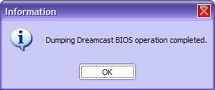

| 11. Copier le BIOS |
Ce chapitre montre comment copier le BIOS de votre Dreamcast.
1) Introduction
Pourquoi copier le BIOS ? Avec l'explosion de l'émulation Dreamcast, j'ai nommé Chankast, un BIOS est nécessaire. Vous pouvez bien sur le télécharger sur Internet. Vous en avez le droit, si vous possédez une Dreamcast. Chose qui est probable si vous lisez ces lignes.
Mais pourquoi pas utiliser votre propre BIOS avec votre FLASH ? Moi je préfère. Donc j'ai implementé la fonction. Merci Erwan au passage.
2) Utilisation
Pour lancer la copie du BIOS, assurez vous d'avoir DC-LOAD lancé. Allez dans le menu Fichier > Copier le BIOS... . Une fenêtre s'affiche :
Vous devez pas distribuer le BIOS. Rappellez vous de cela. Cliquez sur J'accepte pour continuer. Une autre boîte de dialogue s'affiche :
Chossissez l'endroit ou enregistrer les deux fichiers du BIOS : DC_BIOS.BIN et DC_FLASH.BIN. Puis cliquez sur OK. Une autre boîte s'affiche maintenant, vous pouvez suivre la progression ici.
Si vous devez partir quelque part, cliquez sur Annuler. Vous devrez de toute manière relancer la Dreamcast. Bref, au bout d'un certain temps, la copie sera terminée. Vous aurez donc :
Suivi d'une boîte de message :

BRAVO! Vous avez terminé !
Pour information, vous aurez deux fichiers, voici leur taille :